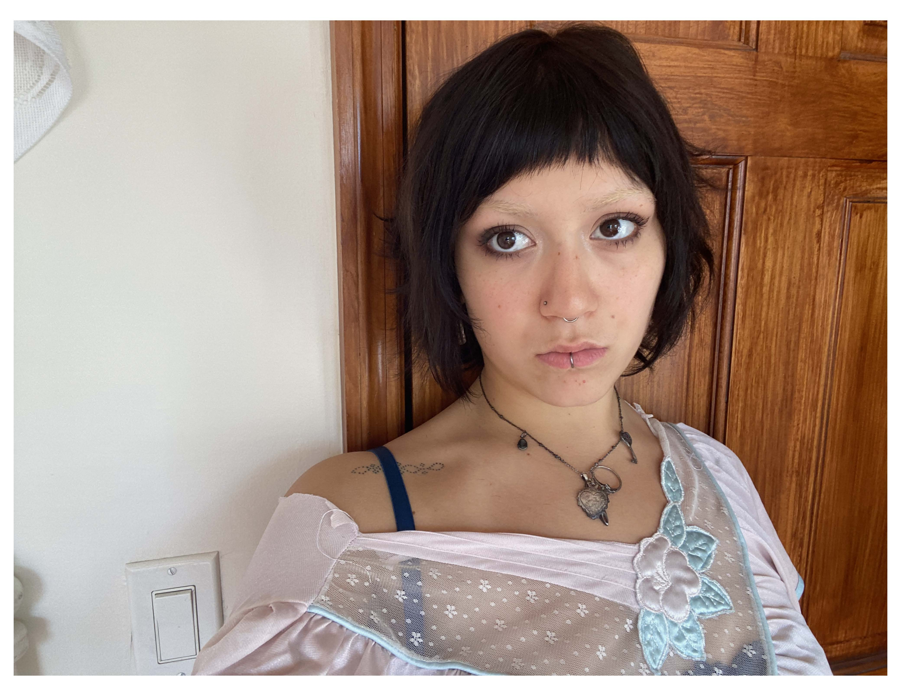

As an artist, I aim to share my inner mind and experiences so that those who have experienced the same can know that they are not alone. This may be true for most artists, but my goal is ultimately to evoke emotion through abstraction. I find that when I try to create using literal images, it feels as though it has all been done before.
With my work, which has previously been in the form of painting or drawing, but in the future I hope to be in the form of audio-visual media, I want my viewer to have a stronger emotional connection to my work because of its abstract nature. I find that abstraction can be both universal and particular. It can be anything.
For example, the feeling of driving away from the person you love most in the world, of coming home from college for the first time and feeling out of place, talking to a friend about something and realizing you were experiencing the same thing side by side without realizing it. Although the literal moment may be simpler to capture, it is the fleeting sensation that I hope to capture through abstraction.
When it comes to filmmaking, abstraction can be harder to create because, after all, you are recording images of exactly what you see. But I’ve been inspired by the works of Yorgos Lanthimos and Ari Aster, where not only do they evoke universal experiences through the depiction of the particular, but they manage to do this in a surreal and fantastical way. That is what I want to draw upon in my work.